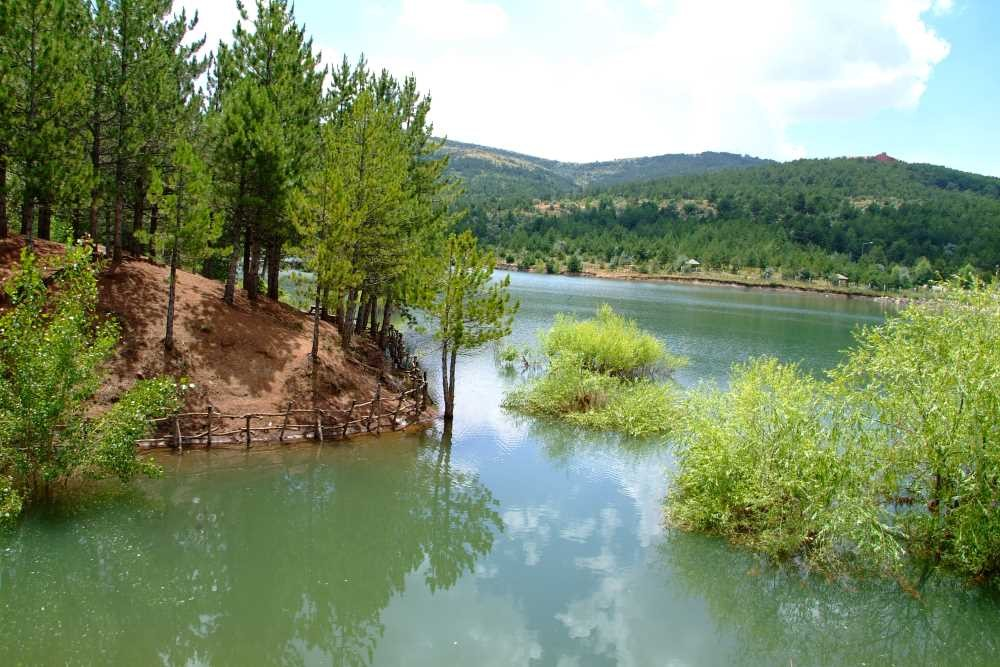

Yozgat'ın Çamlığını keşfedin.
Yozgat Çamlığı Milli Parkı 1958 yılında ülkemizin ilk milli parkı olarak ilan edilmiştir. 266,9 hektarlık alana sahip milli parkın ana kaynak değerini Anadolu Karaçamı (Pinus nigra subsp. pallasiana) oluşturmaktadır. Yozgat Çamlığı Milli Parkı içerisindeki bitki türleri 43 familya ve 144 cins içinde toplanmıştır. Ayrıca Milli Park içerisinde doğal olarak bulunan hayvan türleri; kaya kartalı, kızıl şahin, atmaca, arı kuşu, ardıç kuşu, kargalar, serçe, tepeli toygar gibi kuşlar, kurt, domuz, tavşan, tilki ve sansar gibi türler görülmektedir. Yozgat Çamlığı Milli Parkı sahip olduğu 5 asırlık doğal ağaçlarıyla, yıllarca yerel halk tarafından kullanılmış kar kuyuları kültürel kaynak değerleri ile bilimsel amaçlı araştırmalara olanak sağlayan, insanların eğlenmelerine, dinlenmelerine ve kısa süreli tatil yapabilecekleri, dağ ve vadi peyzajlarının bütünleştiği doğal kaynak değerlerinin yanında, eğlence ve dinlence tesisleriyle rekreasyonel kullanım taleplerini karşılayacak kültürel ve rekreasyonel kaynak değerlerine de sahiptir. Yozgat Çamlığı Milli Parkı’nda mutlak koruma zonu içerisinde yaşının yaklaşık 455 olduğu tespit edilen ve tarihe şahitlik etmiş karaçam ağacı bulunmaktadır. Milli park içerisinde bulunan ve hizmet verilen yapı ve tesisler; İdari Ziyaretçi Tanıtım Merkezi Tabiat Eğitim Merkezi Otel Futbol sahası Mescitler Kır lokantası Kafeterya Seyir terasları Çocuk oyun grupları Çeşmeler Büfe Spor alanları Günübirlik kullanım alanları Yürüyüş Parkurları Bisiklet yolları Dağ bisiklet parkuru Kar kuyuları WC’ler Otoparklar
